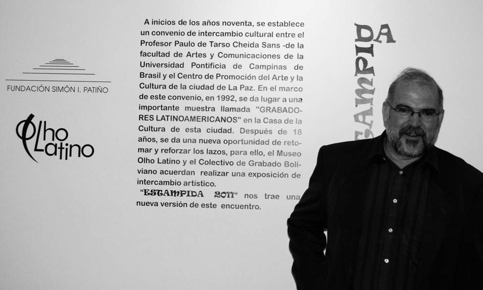
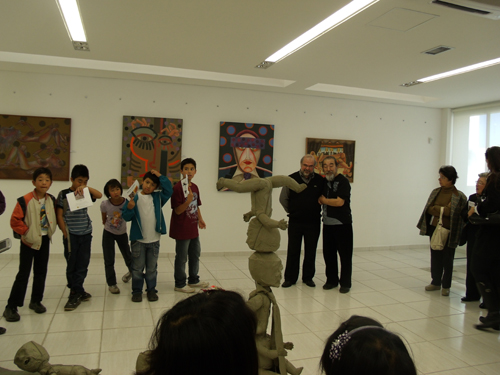
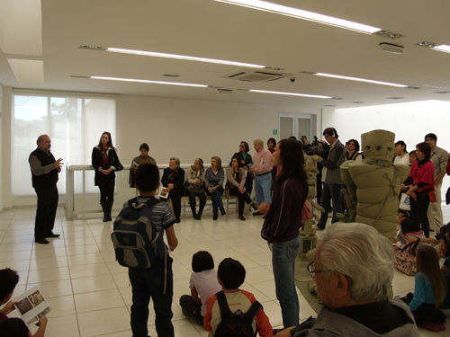
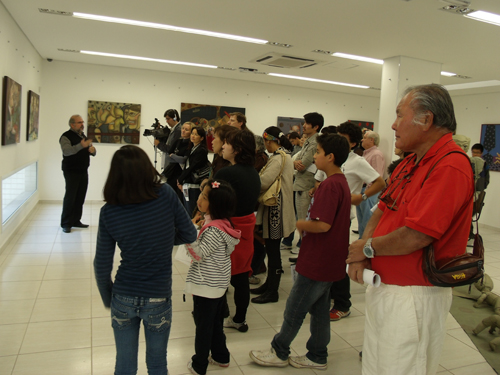
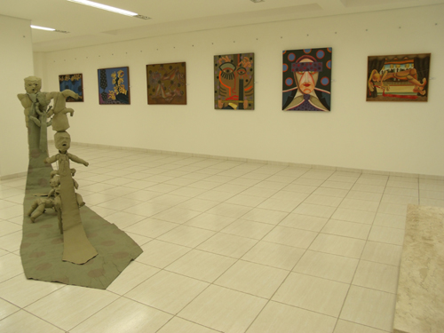
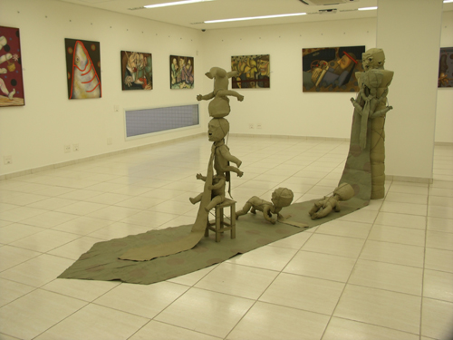

"Fronteras Nómades II" - Cusco, Peru
Paulo Cheida recebe Troféu Destaque de melhor artista plástico do interior do Estado de São Paulo

O artista plástico Paulo Cheida Sans, diretor do Museu Olho Latino, professor da Faculdade de Artes Visuais e extensionista da PUC-Campinas foi laureado com o “Troféu Destaque OC-Artes” na categoria Artes Plásticas como o ”melhor artista plástico do interior do Estado de São Paulo 2011-2012”. A cerimônia de entrega do troféu aconteceu em 17 de agosto de 2012 na Academia Campinense de Letras.
Como artista plástico, Cheida já recebeu mais de quarenta prêmios em Salões de Arte e outras tantas distinções, inclusive o título de Comendador que lhe fora outorgado na década de 80. Premiado nos Estados Unidos, França e Portugal, tem se destacado na área cultural como artista plástico, curador, agente cultural e filósofo da arte. Participou de importantes Bienais de Gravura no Japão, Finlândia, Egito, Polônia, Porto Rico e em muitos outros países.
Obras de sua autoria estão inseridas em importantes acervos no Brasil e no exterior, como no Museu de Arte Contemporânea da Universidade de São Paulo - São Paulo, SP; Museu de Arte de Santa Catarina - Florianópolis, SC; Museu de Arte de Brasília - Brasília, DF; Museu de Arte Contemporânea do Paraná, Curitiba, PR; Centre of Fine Arts – Nehal, Egito, Université Laval - Québec, Canadá; Tama Art University - Tóquio, Japão; Casa de Las Américas - La Habana, Cuba; Casa de Humor e Sátira - Gabrovo, Bulgária e Museu Nacional de Belas Artes - Santiago, Chile.
Além de artista plástico, Cheida também é autor de vários livros, como “Pedagogia do Desenho Infantil” (Alínea), “Fundamentos para o Ensino das Artes Plásticas” (Alínea), “A Criança e o Artista” (Papirus); e organizador de outros, como “Gravura: Contexto Atual” (Arte Ed.) e “Coletânea de Arte e Cultura da América Latina” (Olho Latino).
Paulo Cheida Sans é curador e expositor de mostra em La Paz, BolíviaMuseu Olho Latino expõe em La Paz, Bolívia Estampida 2011 é a mostra que acontece de 07 a 19 de novembro como resultado do Intercâmbio Cultural Bolívia – Brasil, promovido pelo Museu Olho Latino e pelo Colectivo de Grabado Boliviano, a ser realizada pela Fundación Simón I. Patiño no C+C Espaço, que é uma de suas galerias em seu Espaço Cultural em La Paz.
O Espaço Simón I. Patiño (ESIP) é um centro cultural e de formação que promove a criatividade, a pesquisa no âmbito das Artes Visuais, a Literatura, a Música, e as Ciências humanas, organizando atividades diversas.
O Museu Olho Latino está representado com vinte gravuras de grandes formatos dos artistas que compõe o setor de arte-educação, conhecido como Grupo Olho Latino. Este grupo é formado por 12 artistas residentes no interior do Estado de São Paulo, sendo a maioria ex-alunos da PUC-Campinas, licenciados no extinto curso de Educação Artística, nas décadas de 1980 e 90. São artistas com currículos expressivos, alguns possuem pós-graduação, participaram em mostras no exterior e já receberam premiações em salões de arte.
A representação brasileira, contando com a curadoria do prof. Dr. Paulo Cheida Sans, é composta pelos seguintes artistas: Alex Roch, Celina Carvalho, Cibele Marion Sisti, Elika Ito, Flávia Bresil Palhares, Lisa França, Maricel Fermoselli, Paulo Cheida Sans, Regiane Capp Couto Buccioli, Suely Arnaldo, Walcirlei Siqueira, Young Koh.
A representação de gravadores bolivianos está em fase de seleção, visto que foram abertas inscrições para participação que serão analisadas por uma comissão julgadora que indicará os representantes da gravura na Bolívia para participarem da mostra em conjunto com o Grupo Olho Latino.
No ano passado, fruto deste intercâmbio, aconteceu a mostra Estampa, na Sala de Exposição da Faculdade de Arquitetura da Universidad Mayor de San Andrés (UMSA), em La Paz, Bolívia. No início deste ano, o Museu Olho Latino apresentou em sua sede de exposições em Atibaia, SP, a mostra Grabados Bolivianos, expondo as obras doadas pelos artistas bolivianos ao acervo Olho Latino.
O início desse intercâmbio aconteceu há19 anos, na ocasião da primeira mostra de gravura latino-americana realizada pelo Centro de Promoción del Arte y la Cultura – CPAC – na Casa de Cultura de La Paz. Na época, a mostra contou com parte da coleção pessoal de gravuras de Paulo Cheida Sans.
Anos se passaram e hoje o intercâmbio se consolida com o Museu Olho Latino e o Colectivo de Grabado Boliviano, tendo como organizadora a artista boliviana, profa. Paola Rozo, que também participou da organização da mostra realizada em La Paz em 1992.
Para a mostra, os dois grupos de artistas apresentam gravuras em várias técnicas, como xilogravura, linogravura, serigrafia e gravura em metal. A temática é variada e o conjunto das gravuras revela uma poética de valorização da natureza e da vida. O objetivo é valorizar e difundir a arte da gravura dos dois países.
A mostra está aberta à visitação de 07 a 19 de novembro no C+C, anexo do Espaço Simón I. Patiño, à Av. Ecuador, 2503, no bairro cultural Sopocachi, La Paz, Bolívia.
Serviço:
Exposição: Estampida 2011 – Bolívia - Brasil.
Expositores: Grupo Olho latino e Colectivo de Grabado Boliviano
Curadoria: Paulo Cheida Sans (Representação Brasileira)
Período da mostra: 07 a 19 de novembro de 2011.
Local: Espaço C+C, anexo do Espaço Simón I. Patiño - La Paz - Bolívia.
Endereço: Av. Ecuador, 2503 – Bairro Sopocachi, La Paz, Bolívia.
Realização: Museu Olho Latino, Colectivo de Grabado Boliviano e Fundación Simón I. PatiñoMuseu Olho Latino expõe em La Paz, Bolívia
 O Espaço Simón I. Patiño (ESIP) é um centro cultural e de formação que promove a criatividade, a pesquisa no âmbito das Artes Visuais, a Literatura, a Música, e as Ciências humanas, organizando atividades diversas. O Museu Olho Latino está representado com vinte gravuras de grandes formatos dos artistas que compõe o setor de arte-educação, conhecido como Grupo Olho Latino. Este grupo é formado por 12 artistas residentes no interior do Estado de São Paulo, sendo a maioria ex-alunos da PUC-Campinas, licenciados no extinto curso de Educação Artística, nas décadas de 1980 e 90. São artistas com currículos expressivos, alguns possuem pós-graduação, participaram em mostras no exterior e já receberam premiações em salões de arte. A representação brasileira, contando com a curadoria do prof. Dr. Paulo Cheida Sans, é composta pelos seguintes artistas: Alex Roch, Celina Carvalho, Cibele Marion Sisti, Elika Ito, Flávia Bresil Palhares, Lisa França, Maricel Fermoselli, Paulo Cheida Sans, Regiane Capp Couto Buccioli, Suely Arnaldo, Walcirlei Siqueira, Young Koh. A representação de gravadores bolivianos está em fase de seleção, visto que foram abertas inscrições para participação que serão analisadas por uma comissão julgadora que indicará os representantes da gravura na Bolívia para participarem da mostra em conjunto com o Grupo Olho Latino. No ano passado, fruto deste intercâmbio, aconteceu a mostra Estampa, na Sala de Exposição da Faculdade de Arquitetura da Universidad Mayor de San Andrés (UMSA), em La Paz, Bolívia. No início deste ano, o Museu Olho Latino apresentou em sua sede de exposições em Atibaia, SP, a mostra Grabados Bolivianos, expondo as obras doadas pelos artistas bolivianos ao acervo Olho Latino. O início desse intercâmbio aconteceu há19 anos, na ocasião da primeira mostra de gravura latino-americana realizada pelo Centro de Promoción del Arte y la Cultura – CPAC – na Casa de Cultura de La Paz. Na época, a mostra contou com parte da coleção pessoal de gravuras de Paulo Cheida Sans. Anos se passaram e hoje o intercâmbio se consolida com o Museu Olho Latino e o Colectivo de Grabado Boliviano, tendo como organizadora a artista boliviana, profa. Paola Rozo, que também participou da organização da mostra realizada em La Paz em 1992. Para a mostra, os dois grupos de artistas apresentam gravuras em várias técnicas, como xilogravura, linogravura, serigrafia e gravura em metal. A temática é variada e o conjunto das gravuras revela uma poética de valorização da natureza e da vida. O objetivo é valorizar e difundir a arte da gravura dos dois países. A mostra está aberta à visitação de 07 a 19 de novembro no C+C, anexo do Espaço Simón I. Patiño, à Av. Ecuador, 2503, no bairro cultural Sopocachi, La Paz, Bolívia.
Informativo:
Exposição: Estampida 2011 – Bolívia - Brasil. Expositores: Grupo Olho latino e Colectivo de Grabado Boliviano. Curadoria: Paulo Cheida Sans (Representação Brasileira). Período da mostra: 07 a 19 de novembro de 2011. Local: Espaço C+C, anexo do Espaço Simón I. Patiño - La Paz - Bolívia. Endereço: Av. Ecuador, 2503 – Bairro Sopocachi, La Paz, Bolívia. Realização: Museu Olho Latino, Colectivo de Grabado Boliviano e Fundación Simón I. Patiño. Paulo Cheida Sans expõe pinturas e esculturas no Lugar Pantemporâneo em São PauloA mostra "Lampejos" foi prorrogada até o dia 22 de outubro de 2011. Veja nesse vídeo flashes da abertura e da visita guiada.
 



 O diretor do Museu Olho Latino, Paulo Cheida Sans, realizou uma
visita guiada em sua mostra "Lampejos" no dia 03 de setembro.
 Paulo Cheida Sans
A mostra Lampejos de Paulo Cheida Sans reúne cerca de 20 criações, entre esculturas e pinturas no Lugar Pantemporâneo em São Paulo. A exposição foi prorrogada até 22 de outubro de 2011 e a entrada é franca. O artista apresenta obras da série “gravatas”, sendo a maioria, inédita. A temática sobre contexto social o tem acompanhado desde muitos anos. Em seus trabalhos quase sempre aparece a gravata, transformada em espécie de arma que simboliza um caminho a seguir. Em alguns a figura da gravata está sugerida mesmo que camuflada. Segundo o próprio autor, "as cores, as texturas das pinturas e o conteúdo expressivo de um rosto ou de várias figuras anônimas em meio a situações inusitadas das cenas propostas colocam a presente mostra como um momento oportuno para apreciá-la como lampejos de uma vida em convívio social, mesmo que as imagens revelem ‘algo’ de um mundo fictício”.  "Figuras" - Paulo Cheida Sans
Paulo Cheida é artista de longa data, tendo participado em mais de 400 mostras no Brasil e exterior. Recebeu 41 prêmios em Salões de Artes, sendo três no exterior, em Portugal, Estados Unidos e França. Suas obras estão inseridas em importantes acervos em vários países, tais como: Embaixada do Brasil em Ottawa, Canadá; Cooperativa de Atividades Artísticas Árvore, em Porto, Portugal; Museu Nacional de Belas Artes, em Santiago, Chile; Casa das Américas, em Havana, Cuba; Casa de Humor e Sátira, em Gabrovo, Bulgária; e Museu Pohjanmaan, em Vasa, Finlândia. No Brasil, está representado, entre outros, nos acervos do Museu de Arte Contemporânea de São Paulo; Museu de Arte Contemporânea do Paraná, em Curitiba; Museu de Arte de Brasília e acervo da Caixa Econômica Federal. Paulo Cheida é doutor em Artes pela Unicamp e professor do Curso de Artes Visuais da PUC-Campinas. Fundou e é o diretor curador do Museu Olho Latino, em Atibaia, SP, especializado em Gravura. É autor de vários livros. No dia 03 de setembro de 2011, haverá visita guiada pelo artista no local da exposição a partir das 15 horas, com entrada franca. O Lugar Pantemporâneo é na Av. Nove de Julho, 3.653, Jardim Paulista, em São Paulo, SP.
 (clique para ampliar)
Exposição: "Paulo Cheida Sans - Lampejos" – Pinturas e Esculturas.
Abertura: 31 de agosto, das 19h às 22h.
Período da mostra: de 01de setembro a 08 de outubro de 2011. (prorrogada até 22 de outubro de 2011)
Visitação: de segunda-feira a sábado, das 10h às 18h, exceto feriados. Entrada franca.
Local: Lugar Pantemporâneo.
Endereço: Av. Nove de Julho, 3.653 - Jardim Paulista - CEP 01407-000 - São Paulo, SP.
Telefone: (11) 3018-2230
Informações: www.pantemporaneo.com.br
Veja algumas obras de Paulo Cheida Sans que fazem parte da mostra "Lampejos" que inaugura dia 31 de agosto, às 19h, no Lugar Pantemporâneo em São Paulo, SP.
|